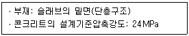
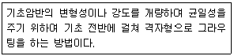
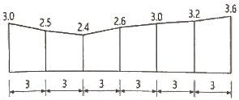
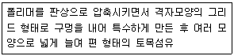
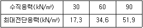
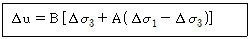
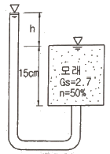
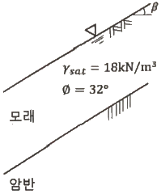

건설재료시험기사 (2020-09-26 기출문제)
1과목: 콘크리트공학
1. 프리스트레스트 콘크리트에서 굵은 골재의 최대 치수는 보통의 경우 얼마를 표준으로 하는가?
- 15mm
- 25mm
- 40mm
- 50mm
(정답률: 82%)

2. 콘크리트의 내구성 향상 방안으로 틀린 것은?
- 알칼리금속이나 염화물의 함유량이 많은 재료를 사용한다.
- 내구성이 우수한 골재를 사용한다.
- 물-결합재비를 될 수 있는 한 적게 한다.
- 목적에 맞는 시멘트나 혼화재료를 사용한다.
(정답률: 88%)
3. 고강도 콘크리트에 대한 설명으로 틀린 것은?
- 콘크리트의 강도를 확보하기 위하여 공기연행제를 사용하는 것을 원칙으로 한다.
- 고강도 콘크리트의 설계기준압축강도는 일반적으로 40MPa 이상으로 하며, 고강도경량골재 콘크리트는 27MPa 이상으로 한다.
- 고강도 콘크리트에 사용되는 굵은 골재의 최대 치수는 40mm 이하로서 가능한 25mm 이하로 하며, 철근 최소 수평 순간격의 3/4 이내의 것을 사용하도록 한다.
- 단위 시멘트량은 소요의 워커빌리티 및 강도를 얻을 수 있는 범위 내에서 가능한 적게 되도록 시험에 의해 정하여야 한다.
(정답률: 58%)
4. 콘크리트의 받아들이기 품질 검사 항목 중 염소이온량 시험의 시기 및 횟수에 대한 규정으로 옳은 것은?
- 바다 잔골재를 사용할 경우: 2회/일, 그 밖의 경우: 1회/주
- 바다 잔골재를 사용할 경우: 1회/일, 그 밖의 경우: 2회/주
- 바다 잔골재를 사용할 경우: 2회/일, 그 밖의 경우: 2회/주
- 바다 잔골재를 사용할 경우: 1회/일, 그 밖의 경우: 1회/주
(정답률: 74%)
5. 순환골재 콘크리트에 대한 설명으로 틀린 것은?
- 순환골재 콘크리트의 공기량은 보통골재를 사용한 콘크리트보다 1% 크게 하여야 한다.
- 순환골재 콘크리트의 제조에 있어서 순환 굵은 골재의 최대 치수는 40mm 이하로 하되, 가능하면 25mm 이하의 것을 사용하는 것이 좋다.
- 콘크리트용 순환골재의 품질을 정하는 기준 항목 중 절대 건조 밀도(g/cm3)는 순환굵은골재인 경우 2.5이상, 순환잔골재인 경우 2.3이상이어야 한다.
- 순환골재를 사용하여 설계기준압축강도 27MPa 이하의 콘크리트를 제조할 경우 순환굵은골재의 최대 치환량은 총 굵은 골재 용적의 60%, 순환잔골재의 최대 치환량은 총 잔골재 용적의 30% 이하로 한다.
(정답률: 44%)
6. 콘크리트 압축강도 추정을 위한 반발경도 시험(KS F 2730)에 대한 설명으로 틀린 것은?
- 콘크리트는 함수율이 증가함에 따라 반발 경도가 크게 측정되므로 콘크리트 습윤 상태에 따른 보정을 실시하여야 한다.
- 0℃ 이하의 온도에서 콘크리트는 정상보다 높은 반발경도를 나타내므로, 콘크리트 내부가 완전히 융해된 후에 시험해야 한다.
- 타격 위치는 가장자리로부터 100mm 이상 떨어지고 서로 30mm 이내로 근접해서는 안된다.
- 시험할 콘크리트 부재는 두께가 100mm 이상이어야 하며, 하나의 구조체에 고정되어야 한다.
(정답률: 51%)
7. 콘크리트의 압축강도를 시험하여 거푸집널을 해체하고자 할 때, 아래와 같은 조건에서 콘크리트 압축강도(fcu)가 얼마 이상인 경우 해체 가능한가?

- 7MPa 이상
- 10MPa 이상
- 13MPa 이상
- 16MPa 이상
(정답률: 76%)
8. 콘크리트의 건조수축 특성에 대한 설명으로 틀린 것은?
- 콘크리트 부재의 크기는 콘크리트 내의 수분이동 속도와 양에 영향을 주므로 건조수축에도 영향을 준다.
- 일반적으로 골재의 탄성계수가 클수록 콘크리트의 수축을 효과적으로 감소시킬 수 있다.
- 단위 수량이 증가할수록 콘크리트의 건조수축량은 증가한다.
- 증기양생을 한 콘크리트의 경우 건조수축이 증가한다.
(정답률: 58%)
9. 프리스트레스트 콘크리트에서 프리스트레싱할 때의 유의사항에 대한 설명으로 틀린 것은?
- 긴장재에 대해 순차적으로 프리스트레싱을 실시할 경우는 각 단계에 있어서 콘크리트에 유해한 응력이 생기지 않도록 한다.
- 프리텐션 방식의 경우 긴장재에 주는 인장력은 고정장치의 활동에 의한 손실을 고려하여야 한다.
- 프리스트레싱 작업 중에는 어떠한 경우라도 인장장치 또는 고정장치 뒤에 사람이 서있지 않도록 하여야 한다.
- 긴장재에 인장력이 주어지도록 긴장할 때 인장력을 설계값 이상으로 주었다가 다시 설계값으로 낮추어 정확한 힘이 전달되도록 시공하여야 한다.
(정답률: 82%)
10. 서중 콘크리트에 대한 설명으로 틀린 것은?
- 하루 평균기온이 25℃를 초과하는 것이 예상되는 경우 서중 콘크리트로 시공한다.
- 일반적으로는 기온 10℃의 상승에 대하여 단위수량은 2~5% 감소하므로 단위수량에 비례하여 단위 시멘트량의 감소를 검토하여야 한다.
- 콘크리트를 타설하기 전에 지반과 거푸집 등을 조사하여 콘크리트로부터의 수분흡수로 품질변화의 우려가 있는 부분은 습윤 상태로 유지하는 등의 조치를 하여야 한다.
- 콘크리트는 비빈 후 즉시 타설하여야 하며, 일반적인 대책을 강구한 경우라도 1.5시간 이내에 타설하여야 한다.
(정답률: 57%)
11. 경화한 콘크리트는 건전부와 균열부에서 측정되는 초음파 전파시간이 다르게 되어 전파속도가 다르다. 이러한 전파속도의 차이를 분석함으로써 균열의 깊이를 평가할 수 있는 비파괴 시험방법은?
- Tc-To법
- 분극저항법
- RC-Radar법
- 전자파 레이더법
(정답률: 68%)
12. 수중 콘크리트에 대한 설명으로 틀린 것은?
- 일반 수중 콘크리트는 수중에서 시공할 때의 강도가 표준공시체 강도의 0.2~0.5배가 되도록 배합강도를 설정하여야 한다.
- 수중 불분리성 콘크리트에 사용하는 굵은 골재의 최대 치수는 40mm 이하를 표준으로 한다.
- 지하연속벽에 사용하는 수중 콘크리트의 경우, 지하연속벽을 가설만으로 이용할 경우에는 단위 시멘트량은 300kg/m3 이상으로 하여야 한다.
- 일반 수중 콘크리트의 타설에서 완전히 물막이를 할 수 없는 경우에도 유속은 50mm/s 이하로 하여야 한다.
(정답률: 46%)
13. 콘크리트 배합에 관한 일반적인 설명으로 틀린 것은?
- 유동화 콘크리트의 경우, 유동화 후 콘크리트의 워커빌리티를 고려하여 잔골재율을 결정할 필요가 있다.
- 잔골재율은 소요의 워커빌리티를 얻을 수 있는 범위 내에서 단위수량이 최대가 되도록 시험에 의하여 정하여야 한다.
- 공사 중에 잔골재의 입도가 변하여 조립률이 ±0.20 이상 차이가 있을 경우에는 워커빌리티가 변화하므로 배합을 수정할 필요가 있다.
- 고성능 공기연행감수제를 사용한 콘크리트의 경우로서 물-결합재비 및 슬럼프가 같으면, 일반적인 공기연행감수제를 사용한 콘크리트와 비교하여 잔골재율을 1~2%정도 크게 하는 것이 좋다.
(정답률: 61%)
14. 콘크리트 배합설계에서 압축강도의 표준편차를 알지 못하고 설계기준 압축강도(fck)가 25MPa일 때 콘크리트 표준시방서에 따른 배합강도(fcr)는?
- 30.5MPa
- 32.0MPa
- 33.5MPa
- 35.0MPa
(정답률: 65%)
15. 콘크리트 시방배합설계 계산에서 단위골재의 절대용적이 689L이고, 잔골재율이 41%, 굵은 골재의 표건밀도가 2.65g/cm3일 경우 단위 굵은 골재량은?
- 730.34kg
- 1021.24kg
- 1077.25kg
- 1137.11kg
(정답률: 73%)
16. 거푸집의 높이가 높을 경우, 연직슈트 또는 펌프배관의 배출구를 타설면 가까운 곳까지 내려서 콘크리트를 타설해야 한다. 이 경우 슈트, 펌프배관, 버킷, 호퍼 등의 배출구와 타설 면까지의 높이는 최대 몇 m 이하를 원칙으로 하는가?
- 0.5m
- 1.0m
- 1.5m
- 2.0m
(정답률: 70%)
17. 콘크리트의 타설에 대한 설명으로 틀린 것은?
- 타설한 콘크리트를 거푸집 안에서 횡방향으로 이동시켜서는 안된다.
- 한 구획내의 콘크리트는 타설이 완료될 때까지 연속해서 타설하여야 한다.
- 콘크리트 타설 도중 표면에 떠올라 고인 블리딩수가 있을 경우에는 콘크리트 표면에 홈을 만들어 배수 처리하여야 한다.
- 콘크리트는 그 표면이 한 구획 내에서는 거의 수평이 되도록 타설하는 것을 원칙으로 한다.
(정답률: 84%)
18. 한중 콘크리트에서 주위의 기온이 영하 6℃, 비볐을 때의 콘크리트의 온도가 영상 15℃, 비빈 후부터 타설이 끝났을 때까지의 시간은 2시간이 소요되었다면 콘크리트 타설이 끝났을 때의 콘크리트 온도는 얼마인가?
- 6.7℃
- 7.2℃
- 7.8℃
- 8.7℃
(정답률: 62%)
19. 압력법에 의한 굳지 않은 콘크리트의 공기량 시험(KS F 2421)에 대한 설명으로 틀린 것은?
- 물을 붓지 않고 시험(무주수법) 하는 경우 용기의 용적은 7L 이상으로 한다.
- 물을 붓고 시험(주수법) 하는 경우 용기의 용적은 적어도 5L로 한다.
- 인공 경량 골재와 같은 다공질 골재를 사용한 콘크리트에 대해서도 적용된다.
- 결과의 계산에서 콘크리트의 공기량은 콘크리트의 겉보기 공기량에서 골재 수정계수를 뺀 값이다.
(정답률: 58%)
20. 팽창 콘크리트의 양생에 대한 설명으로 틀린 것은?
- 콘크리트를 타설한 후에는 살수 등 기타의 방법으로 습윤 상태를 유지하며 콘크리트 온도는 2℃ 이상을 5일간 이상 유지시켜야 한다.
- 보온양생, 급열양생, 증기양생 등의 촉진양생을 실시하면 충분한 소요의 품질을 확보할 수가 있어 품질확인을 위한 시험을 할 필요가 없어 편리하다.
- 거푸집을 제거한 후 콘크리트의 노출면, 특히 슬래브 상부 및 외벽 면은 직사일광, 급격한 건조 및 추위를 막기 위해 필요에 따라 양생매트ㆍ시트 또는 살수 등에 의한 적당한 양생을 실시하여야 한다.
- 콘크리트 거푸집널의 존치기간은 평균기온 20℃ 미만인 경우에는 5일 이상, 20℃ 이상인 경우에는 3일 이상을 원칙으로 한다.
(정답률: 68%)
2과목: 건설시공 및 관리
21. 댐 기초처리를 위한 그라우팅의 종류 중 아래에서 설명하는 것은?

- 커튼 그라우팅
- 블랭킷 그라우팅
- 콘택트 그라우팅
- 콘솔리데이션 그라우팅
(정답률: 69%)
22. 도로 토공을 위한 횡단 측량 결과가 아래 그림과 같을 때 Simpson 제 2법칙에 의해 횡단면적을 구하면? (단, 그림의 단위는 m이다.)

- 50.74m2
- 54.27m2
- 57.63m2
- 61.35m2
(정답률: 52%)
23. 사질토로 25000m3의 성토공사를 할 경우 굴착 토량(자연 상태 토량) 및 운반 토량(흐트러진 상태 토량)은 얼마인가? (단, 토량 변화율 L=1.25, C=0.9이다.)
- 굴착 토량=35600.2m3, 운반 토량=23650.5m3
- 굴착 토량=27777.8m3, 운반 토량=34722.2m3
- 굴착 토량=27531.5m3, 운반 토량=36375.2m3
- 굴착 토량=19865.3m3, 운반 토량=28652.8m3
(정답률: 71%)
24. 하수도 관로의 최소 흙두께(매설깊이)는 원칙적으로 얼마를 하도록 되어 있는가?
- 1.2m
- 1.0m
- 0.8m
- 0.6m
(정답률: 58%)
25. 아스팔트 콘크리트 포장과 비교한 시멘트 콘크리트 포장의 특성에 대한 설명으로 틀린 것은?
- 내구성이 커서 유지관리비가 저렴하다.
- 표층은 교통하중을 하부 층으로 전달하는 역할을 한다.
- 국부적 파손에 대한 보수가 곤란하다.
- 시공 후 충분한 강도를 얻는데까지 장시간의 양생이 필요하다.
(정답률: 59%)
26. 교대에서 날개벽(Wing)의 역할로 가장 적당한 것은?
- 교대의 하중을 부담한다.
- 교량의 상부구조를 지지한다.
- 유량을 경감하여 토사의 퇴적을 촉진시킨다.
- 배면(背面)토사를 보호하고 교대 부근의 세굴을 방지한다.
(정답률: 71%)
27. 뉴매틱 케이슨(Pneumatic Caisson) 공법의 특징으로 틀린 것은?
- 소음과 진동이 커서 도시에서는 부적합하다.
- 기초 지반 토질의 확인 및 정확한 지지력의 측정이 가능하다.
- 굴착 깊이에 제한이 없고 소규모 공사나 심도 싶은 공사에 경제적이다.
- 기초 지반의 보일링 현상 및 히빙 현상을 방지할 수 있으므로 인접 구조물의 피해 우려가 없다.
(정답률: 58%)
28. 터널 보강공법 중 숏크리트의 시공에서 탈락률을 감소시키는 방법으로 틀린 것은?
- 벽면과 직각으로 분사한다.
- 분사 부착면을 거칠게 한다.
- 배합 시 시멘트량을 감소시킨다.
- 호스의 압력을 일정하게 유지한다.
(정답률: 65%)
29. 샌드 드레인(sand drain) 공법에서 영향원의 지름을 de, 모래말뚝의 간격을 d라 할 때 정삼각형의 모래말뚝 배열 식으로 옳은 것은?
- de=1.13d
- de=1.10d
- de=1.⑤d
- de=1.01d
(정답률: 68%)
30. 자연 함수비 8%인 흙으로 성토하고자 한다. 다짐한 흙의 함수비를 15%로 관리하도록 규정하였을 때 매 층마다 1m2당 몇 kg의 물을 살수해야 하는가? (단, 1층의 다짐 후 두께는 20cm이고, 토량 변화율 C=0.8 이며, 원지반 상태에서 흙의 밀도는 1.8t/m3 이다.)
- 21.59kg
- 24.38kg
- 27.23kg
- 29.17kg
(정답률: 27%)
31. 터널 굴착 공법인 TBM공법의 특징에 대한 설명으로 틀린 것은?
- 터널 단면에 대한 분할 굴착시공을 하므로, 지질변화에 대한 확인이 가능하다.
- 기계굴착으로 인해 여굴이 거의 발생하지 않는다.
- 1km 이하의 비교적 짧은 터널의 시공에는 비경제적인 공법이다.
- 본바닥 변화에 대하여 적응이 곤란하다.
(정답률: 55%)
32. 주공정선(critical path)에 대한 설명으로 틀린 것은?
- 주공정선(critical path)상에서 모든 여유는 0(zero)이다.
- 주공정선(critical path)은 반드시 하나만 존재한다.
- 공정의 단축 수단은 주공정선(critical path)의 단축에 착안해야 한다.
- 주공정선(critical path)에 의해 전체 공정이 좌우된다.
(정답률: 62%)
33. 폭우 시 옹벽 배면의 흙은 다량의 물을 함유하게 되는데 뒤채움 토사에 배수 시설이 불량할 경우 침투수가 옹벽에 미치는 영향에 대한 설명으로 틀린 것은?
- 활동면에서의 양압력 발생
- 옹벽 저면에 대한 양압력 발생
- 수동저항(passive resistance)의 증가
- 포화 또는 부분포화에 의한 흙의 무게 증가
(정답률: 67%)
34. PERT 공정 관리 기법에 대한 설명으로 틀린 것은?
- PERT 기법에서는 시간 견적을 3점법으로 확률 계산한다.
- PERT 기법은 결합점(Node) 중심의 일정 계산을 한다.
- PERT 기법은 공기 단축을 목적으로 한다.
- PERT 기법은 경험이 있는 사업 및 반복사업에 이용된다.
(정답률: 58%)
35. 불도저의 종류 중 배토판의 좌, 우를 밑으로 10~40cm 정도 기울여 경사면 굴착이나 도랑파기 작업에 유리한 것은?
- U도저
- 틸트도저
- 레이크도저
- 스트레이트도저
(정답률: 63%)
36. 유효다짐폭 3m의 10t 머캐덤 롤러(macadam roller) 1대를 사용하여 성토의 다짐을 시행할 때 평균 깔기 두께가 20cm, 평균작업속도가 2km/h, 다짐횟수를 10회, 작업효율을 0.6으로 하면 시간당 작업량은? (단, 토량환산계수(f)는 0.8로 한다.)
- 57.6m3/h
- 76.2m3/h
- 85.4m3/h
- 92.7m3/h
(정답률: 38%)
37. 교량가설공법 중 동바리를 이용하는 공법이 아닌 것은?
- 새들(Saddle) 공법
- 벤트(Bent) 공법
- 외팔보(Free Cantilever) 공법
- 가설 트러스(Erection Truss) 공법
(정답률: 47%)
38. 보조기층, 입도 조정기층 등에 침투시켜 이들 층의 방수성을 높이고 그 위에 포설하는 아스팔트 혼합물과의 부착이 잘되게 하기 위하여 보조기층 또는 기층 위에 역청재를 살포하는 것을 무엇이라고 하는가?
- 프라임 코트(prime coat)
- 택 코트(tack coat)
- 실 코트(seal coat)
- 패칭(patching)
(정답률: 66%)
39. 지반중에 초고압으로 가압된 경화재를 에어제트와 함께 이중관 선단에 부착된 분사노즐로 분사시켜 지반의 토립자를 교반하여 경화재와 혼합 고결시키는 공법은?
- LW 공법
- SGR 공법
- SCW 공법
- JSP 공법
(정답률: 67%)
40. 어느 토목현장의 흙의 운반거리가 60m, 전직속도 40m/min, 후진속도 80m/min, 기어변속시간 30초, 작업효율 0.8, 1회의 압토량 2.3m3, 토량변화율(L)이 1.2라면 불도저의 시간당 작업량은? (단, 본바닥 토량으로 구하시오.)
- 33.45m3/h
- 39.27m3/h
- 45.62m3/h
- 51.93m3/h
(정답률: 36%)
3과목: 건설재료 및 시험
41. 아스팔트 혼합물에서 채움재(filler)를 혼합하는 목적은 다음 중 어느 것인가?
- 아스팔트의 공극을 메우기 위해서
- 아스팔트의 비중을 높이기 위해서
- 아스팔트의 침입도를 높이기 위해서
- 아스팔트의 내열성을 증가시키기 위해서
(정답률: 65%)
42. 면이 원칙적으로 거의 사격형에 가까운 것으로, 4면을 쪼개어 면에 직각으로 측정한 길이가 면의 최소 변의 1.5배 이상인 석재는?
- 사고석
- 견치석
- 각석
- 판석
(정답률: 60%)
43. 양이온계 유화 아스팔트 중 택 코트용으로 사용하는 것은?
- RS(C)-1
- RS(C)-2
- RS(C)-3
- RS(C)-4
(정답률: 42%)
44. 콘크리트용 천연 굵은 골재의 유해물 함유량 한도(질량백분율)에 대한 설명으로 틀린 것은?
- 연한 석편은 2.0% 이하여야 한다.
- 점토덩어리는 0.25% 이하여야 한다.
- 0.08mm체 통과량은 1.0% 이하여야 한다.
- 콘크리트의 외관이 중요한 경우 석탄, 갈탄 등으로 밀도 0.002g/mm3의 액체에 뜨는 것은 0.5% 이하여야 한다.
(정답률: 35%)
45. 화약에 대한 설명으로 틀린 것은?
- 흑색화약은 원용적의 약 300배의 가스로 팽창하여 2000℃의 열과 660MPa의 압력을 발생시킨다.
- 무연화약은 흑색화약에 비해 낮은 압력을 비교적 장기간 작용시킬 수 있다.
- 흑색화약은 내습성이 뛰어나 젖어도 쉽게 발화하는 장점이 있다.
- 무연화약은 연소성을 조절할 수 있으므로 총탄, 포탄, 로켓 등의 발사에 사용된다.
(정답률: 63%)
46. 어떤 재료의 푸아송 비가 1/3이고, 탄성계수가 2×105MPa일 때 전단탄성계수는?
- 25600MPa
- 75000MPa
- 544000MPa
- 229500MPa
(정답률: 55%)
47. 콘크리트용 화학 혼화제(KS F 2560)에서 규정하고 있는 AE제의 품질 성능(화학 혼화제의 요구 성능)에 대한 규정항목이 아닌 것은?
- 감수율
- 경시 변화량
- 길이 변화비
- 블리딩양의 비
(정답률: 49%)
48. 표면 건조 포화 상태의 시료 1780g을 공기 중에서 건조시켰더니 1731g이 되었고, 이를 다시 노건조시켰더니 1709g이 되었다. 이 골재시료의 흡수율은?
- 1.3%
- 2.8%
- 3.9%
- 4.2%
(정답률: 34%)
49. 시멘트의 응결에 대한 설명으로 틀린 것은?
- 단위 수량이 많으면 응결은 지연된다.
- 온도가 높을수록 응결은 빨라진다.
- C3A가 많을수록 응결은 지연된다.
- 분말도가 높으면 응결은 빨라진다.
(정답률: 59%)
50. 혼화재로서 실리카 퓸을 사용한 콘크리트의 특성으로 틀린 것은?
- 내화학약품성이 향상된다.
- 재료분리 저항성이 향상된다.
- 소요의 단위수량이 감소된다.
- 콘크리트의 강도가 증가된다.
(정답률: 49%)
51. 석재의 일반적인 성질에 대한 설명으로 틀린 것은?
- 암석의 압축강도가 50MPa이상을 경석, 10MPa이상~50MPa미만을 준경석, 10MPa미만을 연석이라 한다.
- 암석의 구조에서 암석특유의 천연적으로 갈라진 금을 절리, 퇴적암이나 변성암에서 나타나는 평행의 절리를 층리라 한다.
- 석재는 강도 중에서 압축강도가 제일 크며, 인장, 휨 및 전단강도는 작기 때문에 구조용으로 사용할 경우 주로 압축력을 받는 부분에 사용된다.
- 석재는 열에 대한 양도체이기 때문에 열의 분포가 균일하며, 1000℃이상의 고온으로 가열하여도 잘 견디는 내화성 재료이다.
(정답률: 51%)
52. 시멘트 클링커 화합물의 특성으로 틀린 것은?
- C3S는 C2S에 비하여 수화열이 크고 초기강도가 크다.
- C2S는 수화열이 작으며 장기강도발현성과 화학저항성이 우수하다.
- C3A는 수화속도가 매우 빠르지만 수화발열량과 수축은 매우 적다.
- C4AF는 화학저항성이 양호해서 내황산염시멘트에 많이 함유되어 있다.
(정답률: 47%)
53. 아스팔트의 인화점과 연소점에 대한 설명을 틀린 것은?
- 아스팔트의 가열하여 어느 일정 온도에 도달할 때 화기를 가까이 했을 경우 인화하는데, 이때 최저온도를 인화점이라고 한다.
- 아스팔트가 인화되어 연소할 때의 최고 온도를 연소점이라 한다.
- 인화점은 연소점보다 온도가 낮다.
- 아스팔트의 가열 시에 위험도를 알기 위해 인화점과 연소점을 측정한다.
(정답률: 39%)
54. 다음에서 설명하는 토목섬유의 종류와 그 주요기능으로 옳은 것은?

- 지오그리드-보강
- 지오멤브레인-보강
- 지오네트-차단
- 지오매트-차단
(정답률: 71%)
55. 콘크리트용 골재(KS F 2527)에 규정되어 있는 콘크리트용 골재의 물리적 성질에 대한 설명으로 틀린 것은? (단, 천연골재의 굵은 골재, 잔골재이다.)
- 굵은 골재의 절대건조 밀도는 2.5g/cm3 이상이어야 한다.
- 잔골재의 안정성은 15%이하이어야 한다.
- 잔골재의 흡수율은 3.0%이하이어야 한다.
- 굵은 골재의 마모율은 40%이하이어야 한다.
(정답률: 50%)
56. 재료의 역학적 성질에 대한 설명으로 옳은 것은?
- 전성은 재료를 두들길 때 엷게 펴지는 성질이다.
- 크리프는 하중이 반복 작용할 때 재료가 정적강도보다도 낮은 강도에서 파괴되는 현상이다.
- 연성은 하중을 받으면 작은 변형에서도 갑작스런 파괴가 일어나는 성질이다.
- 소성은 하중을 받아 변형된 재료가 하중이 제거 되었을 때 다시 원래대로 돌아가려는 성질이다.
(정답률: 55%)
57. AE제를 사용한 콘크리트의 특성에 대한 설명으로 틀린 것은?
- 철근과의 부착강도가 작다.
- 동결융해에 대한 저항성이 크다.
- 콘크리트 블리딩 현상이 증가된다.
- 콘크리트의 워커빌리티를 개선하는데 효과가 있다.
(정답률: 52%)
58. 콘크리트용 골재의 알칼리골재 반응에 대한 설명 중 틀린 것은?
- 알칼리골재 반응은 반응성 있는 골재에 의해 콘크리트에 이상팽창을 일으켜 거북등 모양의 균열을 일으키는 것이다.
- 콘크리트의 팽창량에 미치는 영향은 시멘트 중의 Na2O량과 K2O량의 비 및 반응성 골재의 특성에 의해 달라진다.
- 알칼리골재 반응은 고로슬래그시멘트 및 플라이애시시멘트를 사용하여 억제할 수 있다.
- 알칼리골재 반응을 억제하기 위하여 시멘트에 포함되어 있는 총 알칼리량을 높여야 한다.
(정답률: 59%)
59. 목재의 강도 중 가장 큰 것은?
- 섬유에 평행방향의 압축강도
- 섬유에 직각방향의 압축강도
- 섬유에 평행방향의 인장강도
- 섬유에 평행방향의 전단강도
(정답률: 51%)
60. 시멘트의 강도 시험(KS L ISO 679)을 실시하기 위해 시험용 모르타르를 제작하고자 한다. 1회분의 재료로서 시멘트 450g이 사용되었다면 필요한 표준사의 질량은?
- 1103g
- 1215g
- 1350g
- 1575g
(정답률: 57%)
4과목: 토질 및 기초
61. 다음 지반 개량공법 중 연약한 점토지반에 적당하지 않은 것은?
- 프리로딩 공법
- 샌드 드레인 공법
- 생석회 말뚝 공법
- 바이브로 플로테이션 공법
(정답률: 52%)
62. 사질토에 대한 직접 전단시험을 실시하여 다음과 같은 결과를 얻었다. 내부마찰각은 약 얼마인가?

- 25〫〫〫〫°
- 30°
- 35°
- 40°
(정답률: 50%)
63. 유선망의 특징에 대한 설명으로 틀린 것은?
- 각 유로의 침투유량은 같다.
- 유선과 등수두선은 서로 직교한다.
- 인접한 유선 사이의 수두 감소량(head loss)은 동일하다.
- 침투속도 및 동수경사는 유선망의 폭에 반비례한다.
(정답률: 35%)
64. 두께 H인 점토층에 압밀하중을 가하여 요구되는 압밀도에 달할 때까지 소요되는 기간이 단면배수일 경우 400일이었다면 양면배수일 때는 며칠이 걸리겠는가?
- 800일
- 400일
- 200일
- 100일
(정답률: 44%)
65. 사질토 지반에 축조되는 강성기초의 접지압 분포에 대한 설명으로 옳은 것은?
- 기초 모서리 부분에서 최대 응력이 발생한다.
- 기초에 작용하는 접지압 분포는 토질에 관계없이 일정하다.
- 기초의 중앙 부분에서 최대 응력이 발생한다.
- 기초 밑면의 응력은 어느 부분이나 동일하다.
(정답률: 54%)
66. Terzaghi의 극한지지력 공식에 대한 설명으로 틀린 것은?
- 기초의 형상에 따라 형상계수를 고려하고 있다.
- 지지력계수 Nc, Nq, Nγ는 내부마찰각에 의해 결정된다.
- 점성토에서의 극한지지력은 기초의 근입깊이가 깊어지면 증가된다.
- 사질토에서의 극한지지력은 기초의 폭에 관계없이 기초 하부의 흙에 의해 결정된다.
(정답률: 39%)
67. γt=19kN/m3, ø=30°인 뒤채움 모래를 이용하여 8m 높이의 보강토 옹벽을 설치하고자 한다. 폭 75mm, 두께 3.69mm의 보강띠를 연직 방향 설치간격 Sv=0.5m, 수평방향 설치간격 Sh=1.0m로 시공하고자 할 때, 보강띠에 작용하는 최대 힘(Tmax)의 크기는?
- 15.33kN
- 25.33kN
- 35.33kN
- 45.33kN
(정답률: 26%)
68. 사운딩에 대한 설명으로 틀린 것은?
- 로드 선단에 지중저항체를 설치하고 지반내 관입, 압입, 또는 회전하거나 인발하여 그 저항치로부터 지반의 특성을 파악하는 지반조사방법이다.
- 정적사운딩과 동적사운딩이 있다.
- 압입식 사운딩의 대표적인 방법은 Standard Penetration Test(SPT)이다.
- 특수사운딩 중 측압사운딩의 공내횡방향 재하시험은 보링공을 기계적으로 수평으로 확장시키면서 측압과 수평변위를 측정한다.
(정답률: 50%)
69. 현장 흙의 밀도 시험 중 모래치환법에서 모래는 무엇을 구하기 위하여 사용하는가?
- 시험구멍에서 파낸 흙의 중량
- 시험구멍의 체적
- 지반의 지지력
- 흙의 함수비
(정답률: 47%)
70. 습윤단위중량이 19km/m3, 함수비 25%, 비중이 2.7인 경우 건조단위중량과 포화도는? (단, 물의 단위중량은 9.81kN/m3이다.)
- 17.3kN/m3, 97.8%
- 17.3kN/m3, 90.9%
- 15.2kN/m3, 97.8%
- 15.2kN/m3, 90.9%
(정답률: 32%)
71. 어떤 시료를 입도분석한 결과, 0.075mm체통과율이 65%이었고, 애터버그한계 시험결과 액성한계가 40%이었으며 소성도표(Plasticity chart)에서 A선 위의 구역에 위치한다면 이 시료의 통일분류법(USCS)상 기호로서 옳은 것은? (단, 시료는 무기질이다.)
- CL
- ML
- CH
- MH
(정답률: 46%)
72. 어떤 점토의 압밀계수는 1.92×10-7m2/s, 압축계수의 2.86×10-1m2/kN이었다. 이 점토의 투수계수는? (단, 이 점토의 초기간극비는 0.8이고, 물의 단위중량은 9.81kN/m3이다.)
- 0.99×10-5cm/s
- 1.99×10-5cm/s
- 2.99×10-5cm/s
- 3.99×10-5cm/s
(정답률: 39%)
73. 전체 시추코어 길이가 150cm이고 이중 회수된 코어 길이의 합이 80cm이었으며, 10cm 이상인 코어 길이의 합이 70cm이었을 때 코어의 회수율(TCR)은?
- 56.67%
- 53.33%
- 46.67%
- 43.33%
(정답률: 44%)
74. 단위중량(γt)=19kN/m3, 내부마찰각(ø)=30°, 정지토압계수(Ko)=0.5인 균질한 사질토 지반이 있다. 이 지반이 지표면 아래 2m 지점에 지하수위면이 있고 지하수위면 아래의 포화 단위중량(γsat)=20kN/m3이다. 이때 지표면 아래 4m 지점에서 지반 내 응력에 대한 설명으로 틀린 것은? (단, 물의 단위중량은 9.81kN/m3이다.)
- 연직응력(σ?)은 80kN/m2이다.
- 간극수압(u)은 19.62kN/m2이다.
- 유효연직응력(??‘)은 58.38kN/m2이다.
- 유효수평응력(?h‘)은 29.19kN/m2이다.
(정답률: 34%)
75. 말뚝기초의 지반거동에 대한 설명으로 틀린 것은?
- 연약지반상에 타입되어 지반이 먼저 변형하고 그 결과 말뚝이 저항하는 말뚝을 주동말뚝이라 한다.
- 말뚝에 작용한 하중은 말뚝주변의 마찰력과 말뚝선단의 지지력에 의하여 주변 지반에 전달된다.
- 기성말뚝을 타입하면 전단파괴를 일으키며 말뚝 주위의 지반은 교란된다.
- 말뚝 타입 후 지지력의 증가 또는 감소 현상을 시간효과(time effect)라 한다.
(정답률: 56%)
76. 아래의 공식은 흙 시료에 삼축압력이 작용할 때 흙 시료 내부에 발생하는 간극수압을 구하는 공식이다. 이 식에 대한 설명으로 틀린 것은?

- 포화된 흙의 경우 B=1 이다.
- 간극수압계수 A값은 언제나 (+)의 값을 갖는다.
- 간극수압계수 A값은 삼축압축시험에서 구할 수 있다.
- 포화된 점토에서 구속응력을 일정하게 두고 간극수압을 측정했다면, 축차응력과 간극수압으로부터 A값을 계산할 수 있다.
(정답률: 51%)
77. 그림과 같은 모래시료의 분사현상에 대한 안전율을 3.0 이상이 되도록 하려면 수두차 h를 최대 얼마 이하로 하여야 하는가?

- 12.75cm
- 9.75cm
- 4.25cm
- 3.25cm
(정답률: 36%)
78. 그림과 같이 c=0인 모래로 이루어진 무한사면이 안정을 유지(안전율≥1)하기 위한 경사각(β)의 크기로 옳은 것은? (단, 물의 단위중량은 9.81kN/m3이다.)

- β≤7.94°
- β≤15.87°
- β≤23.79°
- β≤31.76°
(정답률: 47%)
79. 동상 방지대책에 대한 설명으로 틀린 것은?
- 배수구 등을 설치하여 지하수위를 저하시킨다.
- 지표의 흙을 화학약품으로 처리하여 동결온도를 내린다.
- 동결 깊이보다 깊은 흙을 동결하지 않는 흙으로 치환한다.
- 모관수의 상승을 차단하기 위해 조립의 차단층을 지하수위보다 높은 위치에 설치한다.
(정답률: 49%)
80. 두 개의 규소판 사이에 한 개의 알루미늄판이 결합된 3층 구조가 무수히 많이 연결되어 형성된 점토광물로서 각 3층 구조 사이에는 칼륨이온(K+)으로 결합되어 있는 것은?
- 일라이트(illite)
- 카올리나이트(kaolinite)
- 할로이사이트(halloysite)
- 몬모릴로나이트(montmorillonite)
(정답률: 51%)